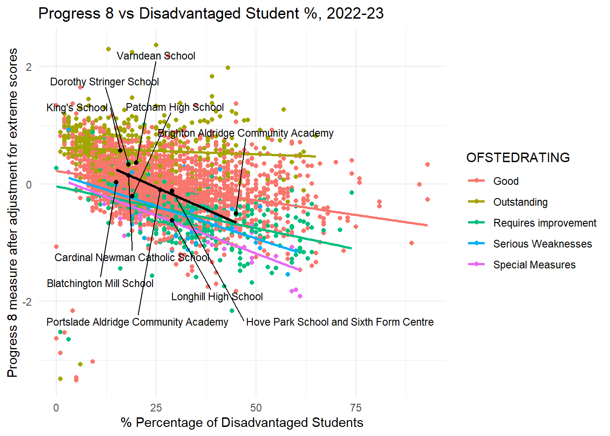
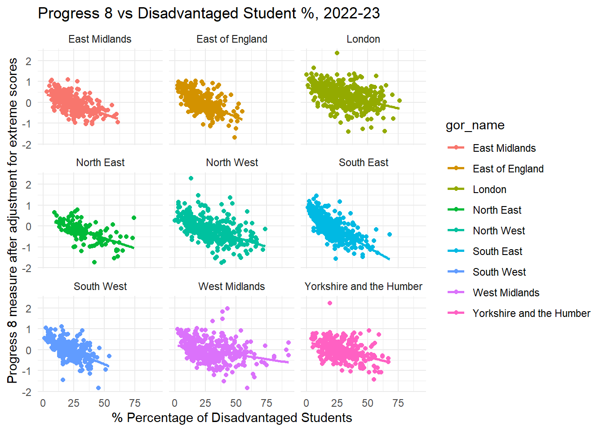
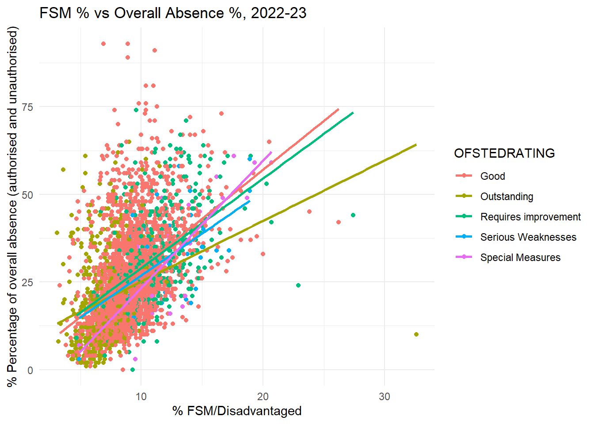
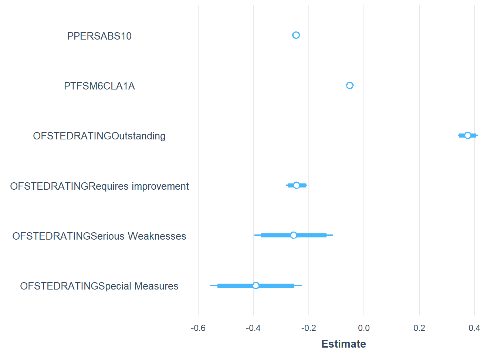

Let’s Talk About Absence
Absence/Attendance and Attainment?
In this piece I am going to change the focus of the conversation and look at something which has thus far been absent (excuse the pun) from any of the conversations about the school system in Brighton. The issue of absence/attendance and its importance for educational outcomes.
Improving Educational Outcomes
The Council’s premise in the very first slide shown in the engagement exercise back in October, was that Brighton and Hove has a large attainment gap and is failing its most disadvantaged pupils. Now, I have since refuted that claim here and shown that Brighton is not performing badly as a city and indeed is above the national median in terms of disadvantaged attainment.
However, it is clear that disadvantage and attainment is still an important topic for the council and is one of the main drivers behind the plans in the consultation. The new proposal documentation (supporting documents here) states in 3.7 that the council wants a system that:
“delivers children’s outcomes which are good and improving especially for those at risk of disadvantage”
and under 3.9 that:
“the proposals put forward were designed to include: a) Better equality of outcomes – results not driven by economic advantage. b) Deliver a ‘comprehensive’ offer from our city schools as a more mixed pupil intake creates better outcomes for disadvantaged pupils.”
Trick or Treatment?
The underpinning assumptions in those statements above and the proposals that follow are that:
economic advantage/disadvantage are the main drivers of results in the city
the main remedy is through some kind of economic mixing in intakes
But in much the same way as when we go to the doctor, we expect an accurate diagnosis and corresponding efficacious treatment, we all know that unfortunately, sometimes, neither diagnosis nor treatment are correct.
We know the council’s prescribed treatment has been influenced quite heavily by some of the work of Stephen Gorard (https://theconversation.com/poorer-pupils-do-worse-at-school-heres-how-to-reduce-the-attainment-gap-205535), but before rushing to a Gorardian treatment, do we know that the diagnosis for the city even correct? And before prescribing a treatment, should we have not carried out a thorough examination of the patient first in case a more serious underlying ailment is causing the symptoms? This is all before we get anywhere near the negative side effects
Not wanting to strain the metaphor further, how do we know for sure that a lack of mixing is indeed the main factor holding back disadvantaged attainment? What if it is not? And if it is not, what is more important? And if there are more important factors, might there be more effective routes to minimising disadvantaged educational outcomes that could offer better or faster results, and indeed do so without the levels of disruption currently on the table?
These are very important questions to ask, not least because under the current proposals, one of the experimental ‘treatments’ being prescribed by the council is forced mixing in schools through artificially reducing places in schools for local students and ‘busing’ significant numbers of students from some neighbourhoods (some by ‘choice’ and some through ‘displacement’ - see the PGS explainer here) to schools a long way from their homes. This kind of forced mixing not only has a questionable history and efficacy in other contexts (see (Rossell 1990) and others for the US history - a very different context, but same underlying idea), but has huge negative social/community, financial and environmental implications for our city (many of which were raised in the Parent Support Group’s latest deputation at the Labour Cabinet meeting in November) which have thus-far been ignored by those advocating for the proposals.
And as I will show below, it is the case that the treatment currently being prescribed by the council, might even make things much worse - again, at risk of stretching the metaphor too far, this could be akin 19th Century doctors prescribing arsenic for psoriasis (Sarfraz 2023).
Absence
Now at this point, you’d be forgiven for shouting “well that’s bloody obvious, I could have told you that!” - which makes it all the more surprising that it has barely surfaced in the narrative during this whole Brighton Secondary School Admissions engagement/consultation process.
I genuinely don’t know why it hasn’t, but again the rush to consultation and a general lack of due care and attention in gathering relevant evidence throughout, are probably in the blame line-up - of course assuming that the publicly stated aims actually align with a desire to conduct evidence-based policy.
The Evidence - the literature
I could get all academic and cite a bunch of papers and government reports, at this juncture, which detail the important role that absence/attendance plays in educational outcomes over and above everything else, but we’ve “had enough of experts”, right? . No? Oh OK then. First up a recent report for the Government’s Social Mobility Commission, where (Riordan, Jopling, and Starr 2021a) state:
“Our statistical models indicate that the strongest predictive factor of the progress made by pupil premium [disadvantaged] students is the school’s absence rate”
“schools with lower absence rates have smaller progress gaps; pupil premium students progress more at schools with lower absence rates; This correlation is regardless of whether they begin with low, medium or high rates of absence.”
“These findings concur with previous research and we share their interpretation too, that this correlation is most likely to be causal. This is because there is an intuitive underlying causal mechanism: students not in school are less likely to learn the school curriculum.”
Next, (Claymore 2023b) (already citied above) in a paper titled: “Being Present: the Power of Attendance and Stability for Stability for Disadvantaged Pupils” states:
“On average, the association between being absent from school and KS4 outcomes is worse for disadvantaged pupils than their more affluent peers”
“Supporting secondary schools to reduce absence, improve behaviour and support within-secondary phase transfers are all key areas of policy focus to boost outcomes of disadvantaged pupils and reduce group gaps in progress and attainment.”
“over half of the gap in outcomes between disadvantaged pupils and their more affluent peers is associated with the underlying group differences in absence, exclusion and pupil transfer rates. Improving these underlying factors for disadvantaged pupils should therefore substantially boost outcomes for the group”
I could also go on to cite work by the National Governance Association (NGA 2024) on improving School Attendance, or the Department for Education’s extensive resources on why improving school attendance is important(DfE 2023) (DfE 2024), but I think you are starting to get the picture. It makes sense, right? If you don’t go to school, it’s harder to learn and achieve.
So the literature clearly says absence is important but:
Is absence from school important for Brighton and Hove?
And if it is, is it more or less important than concentrations of disadvantage in schools in the city?
Fortunately, as has been the case throughout this whole engagement/consultation exercise, data and analysis can shed some light and help us answer these questions.
The Evidence - the data
What is absence and how is absence measured?
There are lots of different reasons why students miss school, for example to attend medical appointments, illness, religious observance, study leave etc. these are likely to be counted as valid reasons and ‘authorised’ by schools. Then there are reasons that are ‘unauthorised’ and these might include things like going on holiday, but also apply to students that might have to stay home to care for family members as well as truancy - i.e. intentionally missing school without permission to be absent.
Reasons for truancy or ‘school refusal’ can be complex and vary between different children, and I won’t go into them here (various sources of information elsewhere if you are interested, including here), but one of the ways in which longer-term absence is measured is if more than 10% of the sessions in a school year are missed. This is often referred to as ‘Persistent Absence’ in the data and this is what we will zoom in on here (rather than other types of authorised or unauthorised absence).
Data Sources
The Department for Education (DfE) publishes various datasets online which cover things like attainment and absence at both the Local Authority level and at the level of individual schools. We will start with this dataset - https://explore-education-statistics.service.gov.uk/data-catalogue/data-set/be024b4d-4f91-40e4-8a58-50dc53dcc93f - “Absence by geographic level - autumn and spring terms combined” which allows us to look at absence in secondary schools across all local authorities from 2016 until 2023.
Question: What is the national picture of persistent absence and how does Brighton and Hove compare?
Persistent Absence - The National Picture

There are couple of things worth pointing out in Figure 1 above:
The problem of persistent absence has increased massively since 2016/17, with stark change in the years after the COVID-19 pandemic, where the median persistent absence had been declining and has reduced to about 12% by 2020, but shot up to over 25% after COVID and is still at about 24% in the most recent data for 2023/24.
At the same time, the variance has increased (meaning the median is less representative of the whole data) - with more Local Authorities having rates of persistent absence well above average, with some having over 1/3 of students missing 10% or more of school.
For Brighton and Hove this situation is bad. Persistent absence has been above average since 2016/17 and while it had declined to only just above the national average in 2020/21, since the Pandemic, the rates of persistent absence have been well above the national average, in 2023/24 topping out at 28%, 4% above the national average of 24%.

If we look at just 2023/24 (Figure 2 above), we can see that Brighton and Hove is not quite an outlier (above the 90% percentile at 1.65 standard deviations from the mean) in terms of persistent absence, but it is well above the national average and outside the interquartile range (where 50% of local authorities would lie) with a rate of 28.2%.
This is a slightly wordy statistical way of saying that the persistent absence situation in Brighton and Hove raises interest and is much worse than most other places in the country.

- If we compare Brighton and Hove with other areas in the county (Figure 3) - here I have chosen regions simply because there are fewer of them and they can fit on a single graph relatively tidily - we can see that Persistent Absence is worse in the Local Authority than it is in any other region in the country.
Persistent Absence - The Local Picture
All data below are downloaded from - https://www.compare-school-performance.service.gov.uk/
So what does persistent absence look like at the school-level in Brighton? Are all schools contributing to the city performing so badly on persistent absence or are there areas where absence is particularly bad? The histogram in Figure 4 below plots the rates of persistent absence for all state secondary schools in England in 2022/23 and overlays the rates the different schools for Brighton and Hove. The black dotted line is the median for England.

Observations
Schools are ordered from lowest to highest left-to-right, so congested lines in the middle can be read from the legend in order.
The national median for persistent absence in 2022/23 is 26.7% of pupils missing 10% or more of possible sessions. Cardinal Newman, Patcham, Dorothy Stringer and Blatchington Mill are all very close to the national average.
King’s School and Varndean have better/lower persistent absence rates than average - King’s much lower.
At the other end of the scale, PACA and Hove Park have noticably above-average/worse persistent absence rates, while Longhill has 42.4% of students persistently absent with BACA an outlier with an incredibly high rate of 51.8% making it one of the worst schools for persistent absence in the country.
The high, above average, city-levels of persistent absence over time shown at the local authority level, appear to be being driven mainly by students who attend two schools - Longhill and BACA
Disadvantaged Pupils
Data from here - https://explore-education-statistics.service.gov.uk/find-statistics/key-stage-4-performance/2022-23
While we are here, it will be useful to look at the disadvantaged pupil picture in the same way. This is because later on we will compare the effects that both disadvantage and absence have on attainment to see which is more important both nationally and in the city. Figure 5 below plots a similar histogram to that above, but this time for disadvantaged pupils.
Taking the description from the DfE “Pupils are defined as disadvantaged if they are known to have been eligible for free school meals at any point in the past six years (from year 6 to year 11), if they are recorded as having been looked after for at least one day or if they are recorded as having been adopted from care.”

Observations - Figure 5
- The national median for disadvantaged pupils at the end of KS4 is around 24%. Most schools in Brighton have below the national average rates of disadvantage.
- PACA (26%) and Longhill (29%) have slightly above the national average rate of disadvantage, but not significantly so.
- BACA, on the other hand, has a very high rate of disadvantage, with 45% of pupils being disadvantaged.
Attainment
Measuring attainment is tricky. Absolute attainment (number of A*s at GCSE - sorry, I know we don’t have A*s anymore, showing my age, but you know what I mean) is a crude measure as it fails to take any account of the diversity of schools and their cohorts, so for a number of years now the preferred measure of attainment as been to look at the ‘value added’ by schools to their pupils by essentially comparing the levels of attainment of pupils when they leave secondary school after their GCSEs, with the levels of attainment they came in with after Primary School.
The standard measure of ‘value added’ used by the government for the last few years is something called the “Progress 8” score. “The score is calculated for each student by comparing their GCSE (or equivalent) results with the results of peers who achieved a similar level of attainment at the end of primary school” (Riordan, Jopling, and Starr 2021b). This is done across 8 subjects/qualifications (hence the name), with England and Maths given a double weighting. It is a ratio centred on Zero and generally ranges between -1 and +1 for most schools (when aggregated to school level).
Progress 8 has been criticised as a measure for various reasons, including its perceived volatility, however the general conclusions in the literature are, it’s not perfect, but it’s certainly better than the old measure of counting students achieving 5 A*-C grades - various pieces including by (Prior et al., n.d.) and (Beynon 2024) here, and here if you want to follow up. And in an Institute for Fiscal Studies report, (Britton, Clark, and Lee 2023) evaluate the effectiveness of using Progress 8 and also conclude that
“controlling for prior attainment alone is sufficient to produce accurate estimates, and we find no compelling evidence to suggest that the government’s current effectiveness measure, Progress 8, is unreliable. Given its relative simplicity, Progress 8 is a usable measure for teachers and schools, leading us to conclude that there is a limited case for reform based on our data.”
So we will continue with Progress 8 for now.

Observations - Figure 6
Note, these are not the latest Progress 8 scores from 2023/24 - these have just been publilshed, but not with useful comparative data for the same year yet, so I’m sticking to 2022/23 for now. However, if you want to look at the latest Progress 8 Scores for Brighton Schools, you can see them here. Of note in 2023/24, however, is the fact that of the schools performing below average, BACA has made a notable improvement from -0.5 to -0.4 in the latest P8 stats. Longhill has declined further from -0.62 to -0.7 and Patcham has declined from -0.21 to -0.45. At the other end of the scale, of those above average, Blatchington Mill has improved from 0.03 to 0.3.
As Progress 8 scores are relative to a national average, the distribution around the mean of 0 is about as normal as you might get and the distribution of Brighton schools around this mean is also pretty normal with as many schools above as below average.
Longhill has the worst Progress 8 scores in the City in 2022/23, with BACA performing slightly better at that time, although with BACA improving and Longhill declining in 2024, the gap between these schools has increased.
Absence, Disadvantage and Attainment
In a deputation to Labour Cabinet on 6th December 2024, Dr Carlie Goldsmith from Class Divide aimed an arrow at ‘apparently sophisticated analysis’ from groups in the city opposed to elements of the council’s proposals.
What I hope to offer below is not particularly sophisticated as hopefully you will be able to see with your own eyes the patterns that the data on Absence, Disadvantage and Attainment reveals and arrive at the same interpretations I have.
Being unsophisticated does not mean that I will assume an understanding of some of the more esoteric mathematical dimensions of this analysis, but I will try to keep it as simple as I can and please email me at the address at the top of this piece if you have any questions or queries.
Absence and Attainment
To begin with, I will start with a simple scatter plot. We probably all drew these by hand in science at some point in school. You may have even had a go at drawing a line of best-fit through the points with a ruler (I remember my teachers getting us to do this). The idea is the line is our best attempt at summarising the pattern shown by the dots in the scatter plot, and can be thought of as the average of all the points.
The plot below in Figure 7 is a scatter plot, with each point representing a school in England. The y-axis (vertical) has the average Progress 8 score at the end of KS4 for that school in 2022/23. In this plot, the x-axis (horizontal) represents the % of enrollments at that school that are persistently absent (over 10% of sessions missed) in the same year.

Observations - Figure 7
Looking at the plot and all points together, it should hopefully be clear that on the whole, as the % of enrollments who are persistently absent increases, the value of the Progress 8 score decreases. The more a school has high levels of persistent absence, the lower its Progress 8 score is likely to be. There are, of course, a few weird values (outliers) which don’t follow this trend, but most do.
The blue line through the centre of the plot is the line of best-fit. This is drawn by the computer by minimising the total sum of the squared vertical distances (known as residuals) between each black dot in the plot and the blue line itself. In doing this it ends up with the sum of the positive (dots above the line) and negative residuals (dots below the line) equalling zero.
The blue line has two properties that are useful for helping us describe the cloud of points it is representing:
The first is known as the ‘intercept’. This is the value on the y-axis of the blue line as it crosses zero. In our example, it can be thought of as the value of Progress 8 we would expect for a school if it had 0% persistent absence. Our average best-case Progress 8, if you like. In our case, this value would be 1.06.
The second is known as the ‘slope’. This is the change in the value of y (Progress 8) for a one-unit change (1% persistent absence) on the x-axis. In our example, the slope is -0.04. This means that for every additional 1% of students that are persistently absent, on average, the Progress 8 score for that school will reduce by -0.04.
The other way of thinking about the slope is how much effect x (persistent absence) is having on y (Progress 8) - if there is there is a causal relationship (which I will return to below). The higher the value of the slope, the more effect x is having on y, the lower the value, the less effect it is having. It’s worth also noting that the slope value is in units of x.
On the plot above, I have calculated one more useful property of the points which statisticians know as the \(R^2\). In lay terms, this is a number between 0-1 that describes how good a representation of the points the blue line is. The closer the points hug the line, the closer to 1 the value gets. If all of the black points fell exactly on the line, the \(R^2\) = 1. Another way of describing the blue line is it’s a model (a representation) of the black points. The closer to 1 our \(R^2\) value is, the better our model is and the more reliable it is at describing the underlying relationship.
Our blue line (model) has an \(R^2\) = 0.47. Another way of thinking about this is to say that 47% of the variation in Progress 8 scores between schools can be explained just by the variation in persistent absence. So almost 50%. In statistical terms, this is a very good model. The relationship between Progress 8 and persistent absence is very strong.
One note of caution with interpreting relationships like this is often it is easy to confuse correlation (things going up or down together) with causation (x causing y, rather than y causing x). This is something all researchers need to be aware of and careful to identify clear theoretical reasons behind suggested relationships. However, in this particular case, the causal pathways are clear. As (Riordan, Jopling, and Starr 2021c) (cited earlier) states: “this correlation [between absence and attainment] is most likely to be causal. This is because there is an intuitive underlying causal mechanism: students not in school are less likely to learn the school curriculum.”
So this simple plot actually contains a lot of information:
We know that Persistent Absence explains almost 50% of the variance in Progress 8 scores at the school level in England in 2022/23.
We know that, on average, reducing persistent absence in a school by 1% will likely increase their Progress 8 score by 0.04. 10% reduction in persistent absence will lead to a Progress 8 increasing by 0.4.
Disadvantage and Attainment
OK, now we’re warmed up, here’s a very similar scatter plot, but this time plotting the % of disadvantaged students at a school relative to Progress 8. You might notice some similarities and some differences and I will highlight the ones I think relevant below.

Observations - Figure 8
The first thing to note is there is also a negative correlation in this graph. As the proportion of disadvantaged students a school has goes up, on average, the progress 8 score goes down.
However, hopefully you will have noticed a few differences between this plot and the first one.
Slope - the slope of the blue line is shallower. This means that (assuming a causal relationship), on average, having a higher concentration of disadvantaged students in a school has a less severe negative impact on Progress 8. A 1% increase in disadvantaged students will only lead to a 0.01 decrease in Progress 8 (compared to a 0.04 decrease for persistent absence).
Intercept - the intercept is 0.36, which means that, on average, if a school had 0% disadvantaged students, it might expect a Progress 8 score of 0.36. This is compared to an intercept of 1.06 for Persistent absence, again, suggesting reducing absence rather than disadvantage concentrations is likely to have a greater impact on Progress 8.
\(R^2\) - this is 0.15. So the % of disadvantaged students in a school can only predict 15% of the variation in Progress 8 scores (compared to 47% for Persistent Absence). It is also possible to see this visually - the cloud of points in this plot are far more dispersed than in the earlier plot, showing visually the weaker relationship.
Interpretation
At a national level in 2022/23, then, it’s clear that persistent absence is both a better predictor of Progress 8 than disadvantage and stands a better chance of being more influential on progress outcomes if reduced in schools. If I were a policy maker and sitting on top of evidence such as this and I wanted to improve educational outcomes using some high-level lever, the most sensible course of action would be to look at persistent absence before getting anywhere near disadvantage.
It also points to the premise in the consultation documents I mentioned earlier - that outcomes in the city are being driven by economic advantage - potentially being incorrect. This evidence seems to suggest that while economic advantage/disadvantage might play a part, factors like persistent absence are likely to be playing even more of a part.
As such, some questions you might well be asking at this point are “why have we heard nothing about persistent absence from the council or organisations campaigning to improve outcomes for disadvantaged students like Class Divide over the last few months?“ and “why has the council been zooming in on disadvantage and Free School Meals when a much more important factor and potentially bigger policy win is sitting there being ignored?” I genuinely don’t know the answers - perhaps they can provide them in due course. But in the meantime let’s dig a little deeper into the data to see if even more questions or observations emerge.
Absence, Disadvantage, Ofsted, Brighton and Attainment
The plots above are informative, but we can actually make them work a little harder and reveal even more dimensions to the issue.
Figure 9 below is exactly the same plot as in Figure 7, but this time I have coloured the schools according to their last Ofsted rating and have highlighted each school in Brighton for comparison.
The Ofsted Rating Effect - Persistent Absence


Observations - Figure 9 and Figure 10
By grouping observations according to the Ofsted rating of the school, there is an impact on both the slopes and the intercepts of the relationship between persistent absence and Progress 8 score.
The line intercepts now run in order from outstanding to special measures, with Outstanding schools having the highest intercepts (theoretical value of Progress 8 if 0% persistent absence) and RI / Special measures at the bottom. Which makes intuitive sense - all other things being equal, if no schools had any persistent absence, even though it predicts almost 50% of the variation in P8, the other qualities of Outstanding schools are likely to make their P8 scores better.
The slopes also become less steep as you get towards Outstanding. This means that for outstanding schools, even though persistent absence still affects their P8 scores negatively, the effect is less severe than for good, requires improvement or special measures schools, where the effect is sucessively more amplifed.
For Brighton (see Figure 11 below for a zoomed in view), most of the schools in the city are rated good in 2022/23 (except for Longhill and BACA which are ‘requires improvement’).
The relationship between persistent absence and attainment, on average, appears no different in Brighton than it does in the rest of the country. It’s slope and intercept are similar to the ‘good schools’ slope for the rest of the country.
We already know that BACA and Longhill have serious problems with students who are persistently absent from those schools and it would appear that reducing persistent absence at these schools to anything even near to the city average, would have a big impact on attainment.
It’s worth nothing that this is 2022/23 data and in 2023/24, the P8 situation for BACA and Blatchington mill gets better, but worse for Longhill and Patcham.
In some ways, despite BACA having such dire persistent absence, for a school with that many students not attending on a regular basis, it falls above the city regression line. This means in some senses, it is actually doing better for its students, attainment wise, than we would expect.
The opposite is true for Longhill and Patcham - relative to their persistent absence rates, these schools are doing worse than we would expect - they are below the black regression line. Both would still certainly improve if they cut their persistent absence rates, but it is clear that there are other things also going on. More so than in other schools.

Regional Effects - Persistent Absence
For comparison, we can try other data groupings to see if these make reveal anything else within the data. Below in Figure 12 and Figure 13 the data are grouped according to region. I have done this as we already know from work in previous weeks, that London is an outlier educationally (generally achieving better attainment scores than the rest of the country and doing better by its most disadvantaged pupils).


Observations - Figure 12 and Figure 13
Slightly contrary to what I might have expected, there doesn’t appear to be much of an obvious regional effect, although peering closely, it is possible to see that the intercept for London is a bit higher than for everywhere else, although most of the slopes look to be parallel for most regions, indicating absence has a similar effect wherever you are in the country.
Interestingly, overlaying Brighton, we see that the slope is slightly shallower than for regions. Part of this is a function of the small number of schools in the city meaning drawing a reliable regression (bet-fit) line is hard because small changes to just one or two schools can have a big impact on the line.
One possible interpretation of the shallower line could be that it suggests that reducing persistent absence in the city might have slightly less of an impact on Progress 8 scores than it does in other regions. However, I don’t think this is the correct interpretation.
Having a look a what schools are impacting the line - https://www.desmos.com/calculator/oost57whub - it’s possible to observe that the shallowness of the line relative to English regions is a function of the small number of points and BACA performing better than would be expected given the very high number of persistent absentees in the school. Dropping BACA’s Progress 8 from -0.5 to something like -0.65 would bring the line down to something like the regional slopes.
Conversely, BACA’s 2023/24 improvement (although we don’t know the corresponding persistent absence) is likely to make the slope even shallower. So this is not that improving persistent absence in the city would have less impact than it would elsewhere in the country, rather BACA despite a headline ‘below average’ Progress 8 score, is actually doing much better than we would expect given the levels of persistent absence and this is pulling the slope upwards for the city.
Ofsted and Disadvantage



[1] 0.4780092
Call:
lm(formula = P8MEA ~ PPERSABS10 + PTFSM6CLA1A + OFSTEDRATING,
data = filtered_region)
Residuals:
Min 1Q Median 3Q Max
-1.18783 -0.22372 -0.01046 0.21231 1.92267
Coefficients:
Estimate Std. Error t value Pr(>|t|)
(Intercept) 0.8149448 0.0227424 35.834 < 2e-16 ***
PPERSABS10 -0.0276923 0.0008966 -30.887 < 2e-16 ***
PTFSM6CLA1A -0.0035733 0.0005114 -6.988 3.45e-12 ***
OFSTEDRATINGOutstanding 0.3764263 0.0187253 20.103 < 2e-16 ***
OFSTEDRATINGRequires improvement -0.2436766 0.0199754 -12.199 < 2e-16 ***
OFSTEDRATINGSerious Weaknesses -0.2549097 0.0722577 -3.528 0.000426 ***
OFSTEDRATINGSpecial Measures -0.3911599 0.0845987 -4.624 3.93e-06 ***
---
Signif. codes: 0 '***' 0.001 '**' 0.01 '*' 0.05 '.' 0.1 ' ' 1
Residual standard error: 0.3347 on 2900 degrees of freedom
(48 observations deleted due to missingness)
Multiple R-squared: 0.5695, Adjusted R-squared: 0.5686
F-statistic: 639.3 on 6 and 2900 DF, p-value: < 2.2e-16 GVIF Df GVIF^(1/(2*Df))
PPERSABS10 1.644004 1 1.282187
PTFSM6CLA1A 1.373110 1 1.171798
OFSTEDRATING 1.268037 4 1.030129| Observations | 2907 (48 missing obs. deleted) |
| Dependent variable | P8MEA |
| Type | OLS linear regression |
| F(6,2900) | 639.33 |
| R² | 0.57 |
| Adj. R² | 0.57 |
| Est. | S.E. | t val. | p | |
|---|---|---|---|---|
| (Intercept) | -0.02 | 0.01 | -3.14 | 0.00 |
| PPERSABS10 | -0.25 | 0.01 | -30.89 | 0.00 |
| PTFSM6CLA1A | -0.05 | 0.01 | -6.99 | 0.00 |
| OFSTEDRATINGOutstanding | 0.38 | 0.02 | 20.10 | 0.00 |
| OFSTEDRATINGRequires improvement | -0.24 | 0.02 | -12.20 | 0.00 |
| OFSTEDRATINGSerious Weaknesses | -0.25 | 0.07 | -3.53 | 0.00 |
| OFSTEDRATINGSpecial Measures | -0.39 | 0.08 | -4.62 | 0.00 |
| Standard errors: OLS; Continuous predictors are mean-centered and scaled by 1 s.d. The outcome variable remains in its original units. |

Code
# Create a linear model
model2 <- lm(P8MEA ~ PPERSABS10 + PTFSM6CLA1A + OFSTEDRATING + gor_name, data = filtered_region)
summary(model2)
Call:
lm(formula = P8MEA ~ PPERSABS10 + PTFSM6CLA1A + OFSTEDRATING +
gor_name, data = filtered_region)
Residuals:
Min 1Q Median 3Q Max
-1.17515 -0.21460 -0.00666 0.19880 1.85868
Coefficients:
Estimate Std. Error t value Pr(>|t|)
(Intercept) 0.7680684 0.0286732 26.787 < 2e-16 ***
PPERSABS10 -0.0260691 0.0009051 -28.802 < 2e-16 ***
PTFSM6CLA1A -0.0049552 0.0005440 -9.109 < 2e-16 ***
OFSTEDRATINGOutstanding 0.3509820 0.0183076 19.171 < 2e-16 ***
OFSTEDRATINGRequires improvement -0.2247360 0.0194329 -11.565 < 2e-16 ***
OFSTEDRATINGSerious Weaknesses -0.2317545 0.0700051 -3.311 0.000943 ***
OFSTEDRATINGSpecial Measures -0.3446198 0.0820349 -4.201 2.74e-05 ***
gor_nameEast of England 0.0210959 0.0271729 0.776 0.437602
gor_nameLondon 0.2270736 0.0264643 8.580 < 2e-16 ***
gor_nameNorth East -0.0812467 0.0350976 -2.315 0.020689 *
gor_nameNorth West -0.0601626 0.0260170 -2.312 0.020824 *
gor_nameSouth East -0.0086141 0.0258636 -0.333 0.739115
gor_nameSouth West 0.0721259 0.0282069 2.557 0.010608 *
gor_nameWest Midlands 0.0360556 0.0269216 1.339 0.180585
gor_nameYorkshire and the Humber 0.0692462 0.0281267 2.462 0.013877 *
---
Signif. codes: 0 '***' 0.001 '**' 0.01 '*' 0.05 '.' 0.1 ' ' 1
Residual standard error: 0.3238 on 2892 degrees of freedom
(48 observations deleted due to missingness)
Multiple R-squared: 0.5981, Adjusted R-squared: 0.5961
F-statistic: 307.4 on 14 and 2892 DF, p-value: < 2.2e-16Code
vif_values <- car::vif(model)
vif_values GVIF Df GVIF^(1/(2*Df))
PPERSABS10 1.644004 1 1.282187
PTFSM6CLA1A 1.373110 1 1.171798
OFSTEDRATING 1.268037 4 1.030129Code
summ(model2, scale = TRUE)| Observations | 2907 (48 missing obs. deleted) |
| Dependent variable | P8MEA |
| Type | OLS linear regression |
| F(14,2892) | 307.38 |
| R² | 0.60 |
| Adj. R² | 0.60 |
| Est. | S.E. | t val. | p | |
|---|---|---|---|---|
| (Intercept) | -0.06 | 0.02 | -3.01 | 0.00 |
| PPERSABS10 | -0.23 | 0.01 | -28.80 | 0.00 |
| PTFSM6CLA1A | -0.07 | 0.01 | -9.11 | 0.00 |
| OFSTEDRATINGOutstanding | 0.35 | 0.02 | 19.17 | 0.00 |
| OFSTEDRATINGRequires improvement | -0.22 | 0.02 | -11.56 | 0.00 |
| OFSTEDRATINGSerious Weaknesses | -0.23 | 0.07 | -3.31 | 0.00 |
| OFSTEDRATINGSpecial Measures | -0.34 | 0.08 | -4.20 | 0.00 |
| gor_nameEast of England | 0.02 | 0.03 | 0.78 | 0.44 |
| gor_nameLondon | 0.23 | 0.03 | 8.58 | 0.00 |
| gor_nameNorth East | -0.08 | 0.04 | -2.31 | 0.02 |
| gor_nameNorth West | -0.06 | 0.03 | -2.31 | 0.02 |
| gor_nameSouth East | -0.01 | 0.03 | -0.33 | 0.74 |
| gor_nameSouth West | 0.07 | 0.03 | 2.56 | 0.01 |
| gor_nameWest Midlands | 0.04 | 0.03 | 1.34 | 0.18 |
| gor_nameYorkshire and the Humber | 0.07 | 0.03 | 2.46 | 0.01 |
| Standard errors: OLS; Continuous predictors are mean-centered and scaled by 1 s.d. The outcome variable remains in its original units. |
Code
model3 <- lm(P8MEA ~ PPERSABS10 + PTFSM6CLA1A, data = btn_sub)
summary(model3)
Call:
lm(formula = P8MEA ~ PPERSABS10 + PTFSM6CLA1A, data = btn_sub)
Residuals:
Min 1Q Median 3Q Max
-0.31443 -0.02626 0.02770 0.07533 0.25273
Coefficients:
Estimate Std. Error t value Pr(>|t|)
(Intercept) 0.89704 0.16771 5.349 0.00107 **
PPERSABS10 -0.04724 0.01293 -3.654 0.00813 **
PTFSM6CLA1A 0.02243 0.01569 1.429 0.19600
---
Signif. codes: 0 '***' 0.001 '**' 0.01 '*' 0.05 '.' 0.1 ' ' 1
Residual standard error: 0.1732 on 7 degrees of freedom
Multiple R-squared: 0.837, Adjusted R-squared: 0.7904
F-statistic: 17.97 on 2 and 7 DF, p-value: 0.001748Code
vif_values <- car::vif(model)
vif_values GVIF Df GVIF^(1/(2*Df))
PPERSABS10 1.644004 1 1.282187
PTFSM6CLA1A 1.373110 1 1.171798
OFSTEDRATING 1.268037 4 1.030129Code
summ(model3, scale = F)| Observations | 10 |
| Dependent variable | P8MEA |
| Type | OLS linear regression |
| F(2,7) | 17.97 |
| R² | 0.84 |
| Adj. R² | 0.79 |
| Est. | S.E. | t val. | p | |
|---|---|---|---|---|
| (Intercept) | 0.90 | 0.17 | 5.35 | 0.00 |
| PPERSABS10 | -0.05 | 0.01 | -3.65 | 0.01 |
| PTFSM6CLA1A | 0.02 | 0.02 | 1.43 | 0.20 |
| Standard errors: OLS |